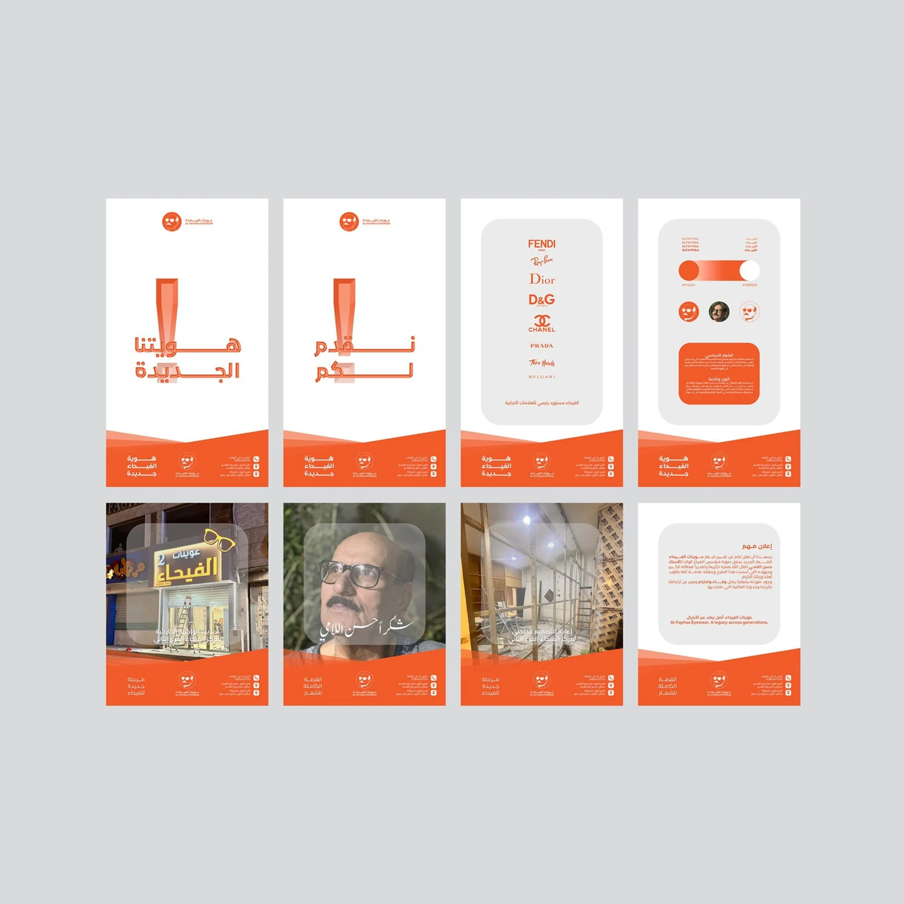
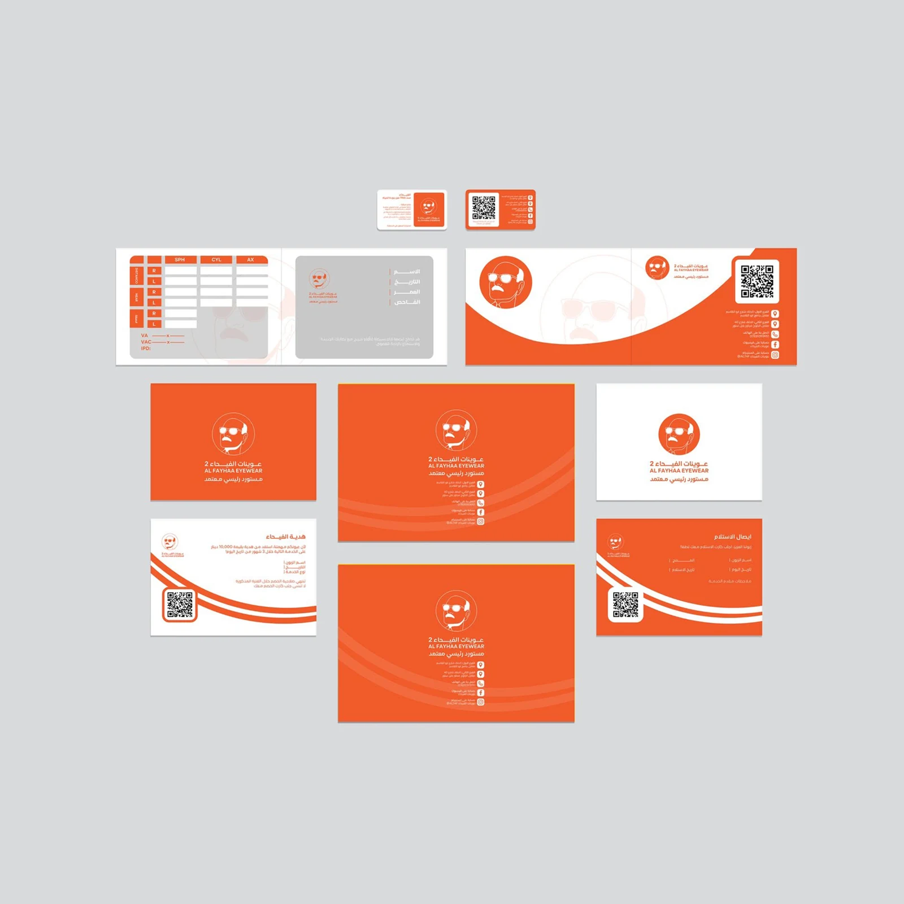
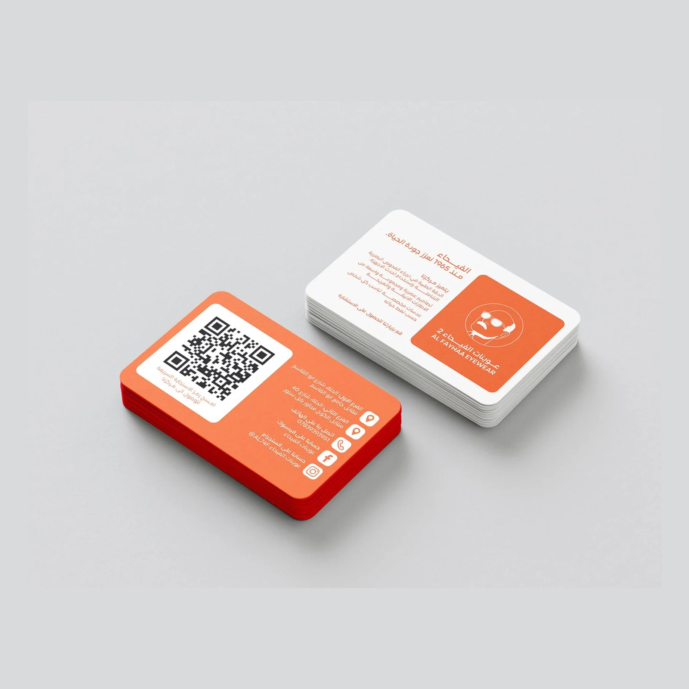

Project
Alfayha Eyewear
We created a recognizable identity and content system for an established eyewear business—bringing its service, expertise, and personality into one clear visual presence.
Project
We created a recognizable identity and content system for an established eyewear business—bringing its service, expertise, and personality into one clear visual presence.
The logo
The mark combines a face, glasses, and a direct expression to make the brand immediately approachable. Its bold orange color gives every touchpoint a confident, consistent signature.


